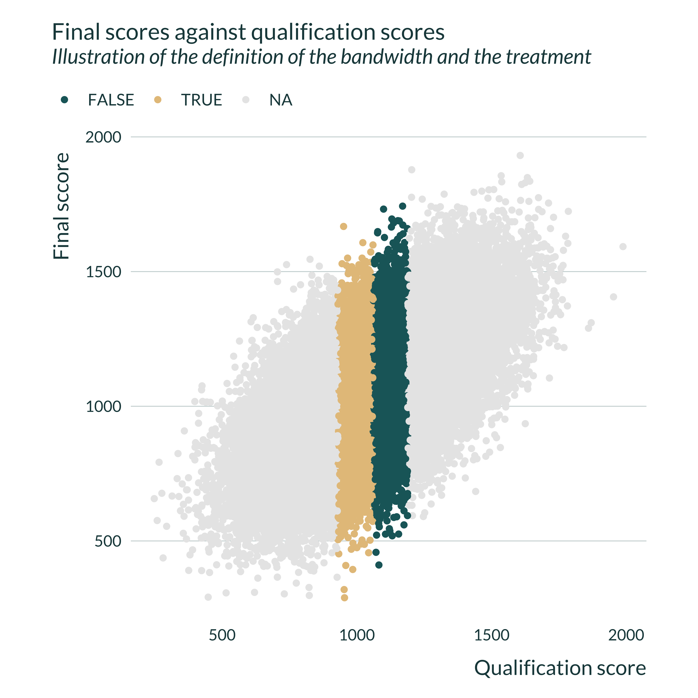
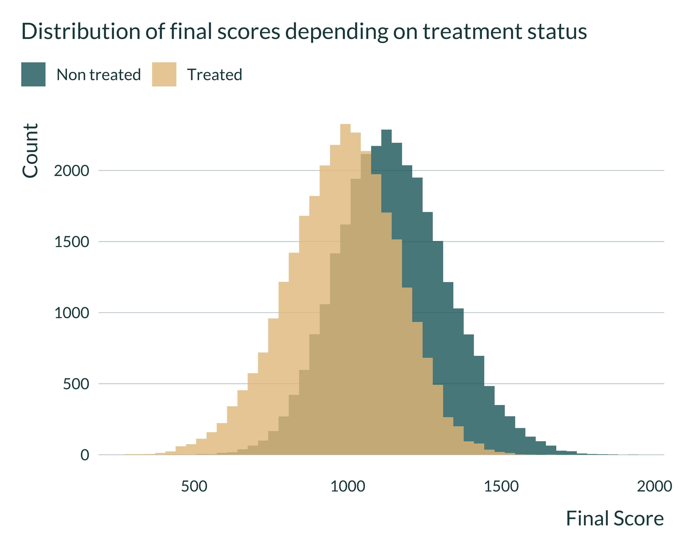
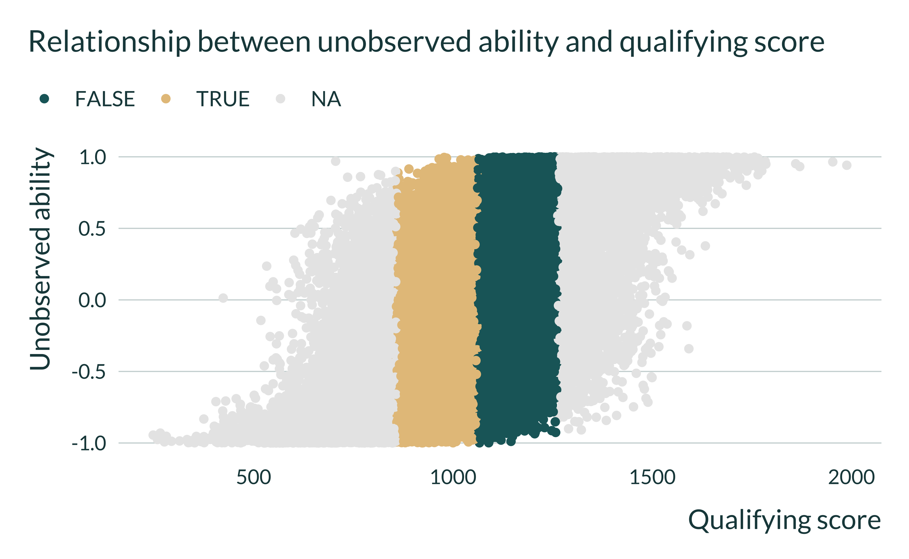
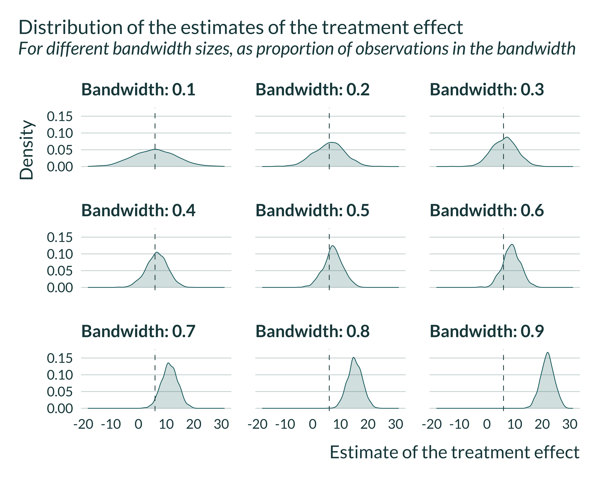
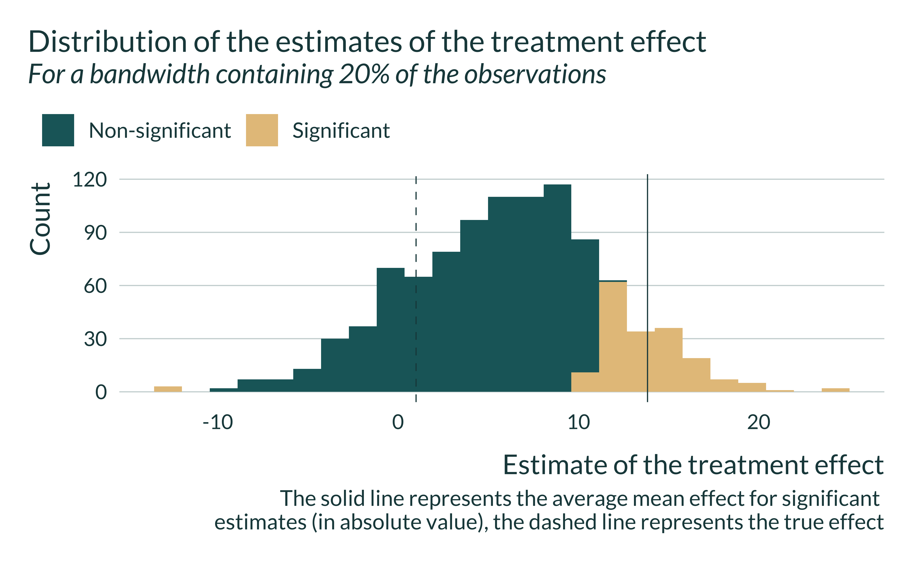
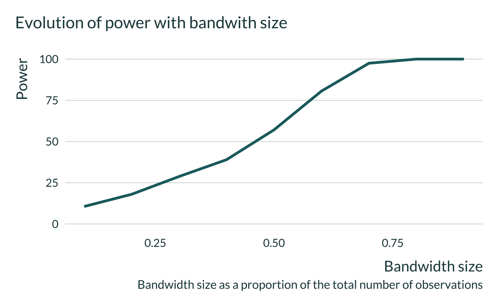
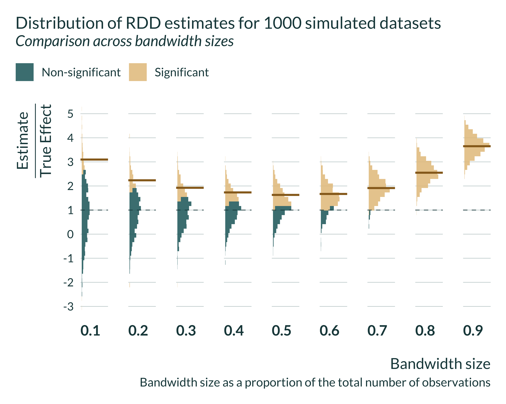
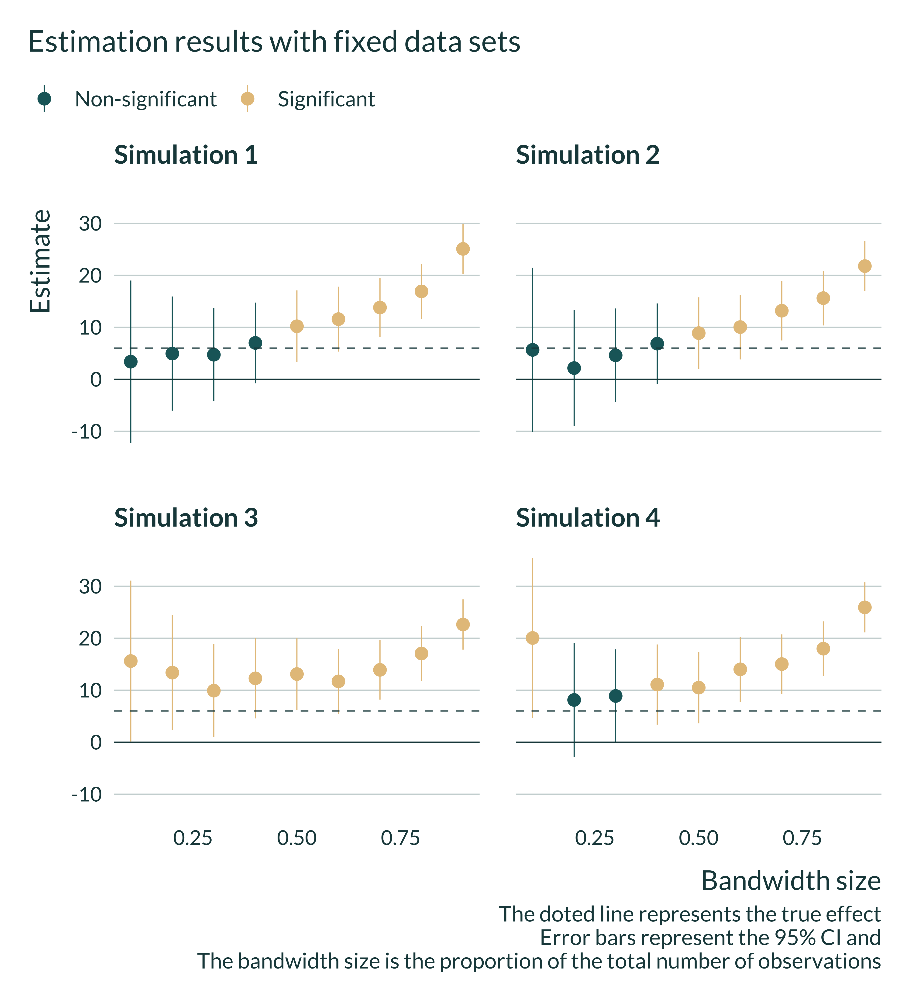

Intuition
In the case of the RDD, the trade-off between avoiding confounding and inflated effect sizes due to low power issues is mediated by the size of the bandwidth considered in the analysis. The underlying idea is that the smaller the bandwidth, the more comparable units are and therefore the smaller the risk of confounding is. Yet, with a smaller bandwidth, sample size and thus power decrease, increasing the exaggeration ratio.
Simulation framework
Illustrative example
To illustrate this trade-off, we consider a standard application of the RD design in economics of education where a grant or additional lessons are assigned based on the score obtained by students on a standardized test. Students with test scores below a given threshold receive the treatment while those above do not. Yet, students far above and far below the threshold may differ along unobserved characteristics such as ability. To limit this bias, the effect of the treatment is estimated by comparing the outcomes of students just below and just above this threshold. This enable to limit disparities in terms of unobserved characteristics.
Thistlethwaite and Campbell (1960) introduced the concept of RDD using this type of quasi-experiment. In their paper, they take advantage of a sharp discontinuity in the assignment of an award (a Certificate of Merit) based on qualifying scores at a test. This type of analysis is still used today and many papers leveraging similar methodologies have been published since this seminal work. For instance, Jacob and Lefgren (2004) exploit this type of discontinuity to study the impact of summer school and grade retention programs on test scores. Students who score below a given score are required to attend a summer school and to retake the test. Students who do not pass the second have to repeat the grade.
Modeling choices
In the present analysis, we build our simulations to replicate a similar type of quasi-experiment. In our fictional example, all students scoring below a cutoff \(C\) in a qualification test are required to take additional lessons. We want to estimate the effect of these additional lessons on scores on a final test taken by all students a year later.
We assume that the final score of student \(i\), \(Final_i\), is correlated with their qualification score \(Qual_i\) and their treatment status \(T_i\), ie whether student \(i\) received additional lessons or not. We further assume that both qualification and final test scores are affected by students unobserved ability \(w_i\) in a non linear way.
The DGP can be represented using the following Directed Acyclic Graph (DAG):
Final test scores are thus defined as follows:
\[Final_{i} = \beta_0 + \beta_1 T_i + \eta Qual_{i} + \delta f(w_i) + u_{i}\]
Where \(\beta_0\) is a constant, \(f\) a non linear function and \(u\) noise. The parameter of interest is \(\beta_1\). In the potential outcomes framework, we have:
- \(Final_i(0) = \beta_0 + \eta Qual_{i} + \delta f(w_i) + u_{i}\)
- \(Final_i(1) = \beta_0 + \eta Qual_{i} + \beta_1 + \delta f(w_i) + u_{i}\)
Qualifying test scores are as follows: \(Qual_i = \mu_q + \gamma f(w_i) + \epsilon_i\)
To simplify, we consider the following assumptions:
- Full compliance and a sharp treatment allocation such that \(T_i = \mathbb{I}[Qual_{i} < C]\). All students with a qualification score below the threshold are treated and receive additional lessons. None of the students with a qualification score above the threshold are treated.
- Constant treatment effects.
- The unobserved ability affects qualification and final test scores in a cubic way (\(f: x \mapsto x^3\)). A large ability has a strong positive impact on test scores. Similarly a particularly low ability strongly impacts test scores negatively. An average ability does not have much impact on test scores. Such a functional form seems realistic, even though it is in essence impossible to evaluate. Note that ability creates an OVB only if it has a non linear impact on test scores.
- The unobserved availability affects the qualification and final score in a similar way and therefore with the same intensity. However, since the unobserved ability affects the final score both directly and through the qualification score, we adjust parameters vaues such that the ability has actually the same effect on both test scores. As a consequence, \(\delta = \gamma \times (1 - \eta)\).
More precisely, we set:
- \(N\) the number of students,
- \(w \sim \mathcal{U}(-1, 1)\) the unobserved ability. We assume an uniform distribution for simplicity and because it yields a rather realistic distribution of test scores. Note that a cubic transformation is performed on this uniform distribution, making the effect of ability not uniformly distributed,
- \(T_i = \mathbb{I}[Qual_{i} < q_c]\) where for now and for simplicity, \(q_c\) is a fixed grade threshold given as the quantile in the qualification score distribution,
- \(\epsilon \sim \mathcal{N}(0, \sigma_{\epsilon}^{2})\) and \(u \sim \mathcal{N}(0, \sigma_u^2)\)
Implementation of the simulations
Data generation
Generating function
We write a simple function that generates the data. It takes as input the values of the different parameters and returns a data frame containing all the variables for this analysis.
Once the fake data is generated, to make things more realistic we consider our data as if it was actual data. We do not take advantage of our knowledge of the data generating process in the estimation procedure. However, we observe both potential outcomes and the unobserved ability. Note that, in a real world setting, one would generally know the value of the threshold (and thus of \(q_c\)). Based on that and to simplify the computation of the bandwidth, we store \(q_c\).
generate_data_RDD <- function(N,
mu_q,
sigma_epsilon,
beta_0,
sigma_u,
beta_1,
eta,
gamma,
q_c) {
# mu_q <- mean_q
# sigma_epsilon <- sqrt(sd_q^2 - gamma^2*(1/3)) #var(u) = 1/3
# beta_0 <- mean_f - eta*mean_q - beta_1*q_c #q_c = mean(treated)
# sigma_u <- sd_f
data <- tibble(id = 1:N) |>
mutate(
w = runif(N, -1, 1),
epsilon = rnorm(N, 0, sigma_epsilon),
qual = mu_q + gamma*w^3 + epsilon,
u = rnorm(N, 0, sigma_u),
treated = qual < quantile(qual, q_c),
final0 = beta_0 + eta*qual + gamma*(1-eta)*w^3 + u,
final1 = final0 + beta_1,
final = final0 + beta_1*treated,
q_c = q_c
)
}Definition the bandwidth
In a RDD, the model is estimated only for observations close enough to the threshold, ie in a given bandwidth. We therefore create a function to define this bandwidth by adding a variable to the data set treated_bw that is equal to NA if the observations is outside of the bandwidth, TRUE if the observation falls in the bandwidth and the student is treated and FALSE if the observation falls in the bandwidth and the student is not treated. The bandwidth parameter bw represents the proportion of units that are in the bandwidth. If bw = 0.1, 10% of the students are in the bandwidth for instance.
Calibration and baseline parameters values
We set baseline values for the parameters to emulate a somehow realistic observational study in this field. We make the following assumptions:
- Number of observations, bandwidth and cutoff: to emulate an existing study, we consider a number of observation consistent with Jacob and Lefgren (2004). In their design, they have 75000 observations per grade and approximately 5000 individuals in their preferred bandwidth, ie 6% of the total sample size. We choose a slightly smaller but comparable number of observations, N = 60000, so that the number of observations in their bandwidth correspond to 0.1 of our sample. In their setting, the cutoff is close to the center of the distribution (roughly 40% of the students get assigned). We consider that the threshold is located at the center of the distribution (q_c = 0.5) and a bandwidth that is symmetric around the cutoff in terms of number of observations. A cut-off in the middle of the distribution enables us to consider very wide bandwidths, up to including the whole sample in the analysis.
- Grades distribution: we assume that grades are SAT scores. One can think of the qualifying exam as a state level exam that gives the opportunity to students with lower grades to receive additional lessons. For simplicity, we assume that the scores have a mean of 1060 and standard error of 200 (based on statistics provided by the Department of Education). We adjust the values of the intercept parameters (
mu_qandbeta_0) and their standard error (sigma_epsilonandsigma_u) to get appropriate distributions. These parameters are the last to be set. The resulting set of parameters may produce some test scores outside of the range 4001600 but that does not affect the analysis. - Correlation between final and qualifying scores: most of the correlation between these two variables comes from the (omitted) ability. The direct parameter \(\eta\) only plays a limited role. It makes sense for this parameter to be in the \([0, 1]\) range, closer to the 0 side, considering that we also model ability. Modifying its value withing this range does not alter the results.
- Treatment effect size: typical treatment effect sizes in economics of education are of the order of magnitude of 0.1 sd. Kraft (2020), reviewing 747 RCTs of education intervention finds that the median effect size is 0.1 sd. Interestingly, he finds that larger studies with broad achievement measures have systematically smaller effect sizes. This might hint to publication bias as he underlines. In studies with more than 2000 individuals, the median effect is 0.03 sd. The same median effect size is observed in preregistered studies. We therefore consider an effect size of 0.03 sd, ie \(\beta_1 = 6 = 200\times 0.03\).
- Modeling of ability. Modeling ability is rather challenging. Since it is unobserved, there is no actual way of mimicking an existing study to simulate its impact. In the modeling stage, we considered that ability is uniformly distributed between -1 and 1 and affect tests scores through its cube. As a consequence, \(\gamma\) takes rather large value. It roughly corresponds to the difference in tests score between the median student and the best performing one caused by their differences in ability. We therefore want to set it such that \(\gamma \simeq 300\). We fine tune it by hand so that it generates enough OVB.
| N | mu_q | sigma_epsilon | beta_0 | sigma_u | beta_1 | eta | q_c | gamma |
|---|---|---|---|---|---|---|---|---|
| 60000 | 1060 | 145 | 850 | 140 | 6 | 0.2 | 0.5 | 360 |
Here is an example of data created with our data generating process:
Show the code used to generate the table
baseline_param_RDD |>
mutate(N = 10) |>
pmap(generate_data_RDD) |> #use pmap to pass the set of parameters
list_rbind() |>
kable()| id | w | epsilon | qual | u | treated | final0 | final1 | final | q_c |
|---|---|---|---|---|---|---|---|---|---|
| 1 | -0.8612782 | -39.482926 | 790.5144 | -98.48500 | TRUE | 725.6158 | 731.6158 | 731.6158 | 0.5 |
| 2 | 0.6355504 | -45.725563 | 1106.6916 | 166.44308 | FALSE | 1311.7151 | 1317.7151 | 1311.7151 | 0.5 |
| 3 | 0.8852435 | -91.097009 | 1218.6445 | 47.67172 | FALSE | 1341.1938 | 1347.1938 | 1341.1938 | 0.5 |
| 4 | -0.4612362 | -15.437263 | 1009.2385 | 70.97554 | FALSE | 1094.5639 | 1100.5639 | 1094.5639 | 0.5 |
| 5 | -0.6613038 | 62.062146 | 1017.9490 | -41.06272 | FALSE | 929.2366 | 935.2366 | 929.2366 | 0.5 |
| 6 | -0.9322088 | -112.769339 | 655.5941 | 31.30980 | TRUE | 779.1193 | 785.1193 | 785.1193 | 0.5 |
| 7 | -0.6424300 | -187.612933 | 776.9362 | 281.00820 | TRUE | 1210.0347 | 1216.0347 | 1216.0347 | 0.5 |
| 8 | 0.2833307 | -113.037144 | 955.1510 | 141.67708 | FALSE | 1189.2578 | 1195.2578 | 1189.2578 | 0.5 |
| 9 | -0.9542445 | 1.733005 | 748.9224 | -42.34429 | TRUE | 707.1917 | 713.1917 | 713.1917 | 0.5 |
| 10 | -0.9833503 | -22.100355 | 695.5835 | -143.53428 | TRUE | 571.7296 | 577.7296 | 577.7296 | 0.5 |
We check the standard deviation and means of the generated exam scores to make sure that they correspond to what we expect:
Show code
ex_data_RDD <- baseline_param_RDD |>
pmap(generate_data_RDD) |>
list_rbind()
ex_data_RDD_mean <- ex_data_RDD |>
summarise(across(.cols = c(qual, final0), .fns = mean)) |>
mutate(Statistic = "Mean") |>
select(Statistic, everything())
ex_data_RDD_sd <- ex_data_RDD |>
summarise(across(.cols = c(qual, final0), .fns = stats::sd)) |>
mutate(Statistic = "Standard Deviation") |>
select(Statistic, everything())
ex_data_RDD_mean |>
rbind(ex_data_RDD_sd) |>
kable()| Statistic | qual | final0 |
|---|---|---|
| Mean | 1060.4593 | 1062.4691 |
| Standard Deviation | 199.1573 | 198.5572 |
Exploration of the data generated
The following graph illustrates this process by plotting final test scores against qualification ones depending on the value of treated_bw.
Show the code used to generate the graph
ex_data_RDD |>
define_bw(0.5) |>
ggplot(aes(x = qual, y = final, color = treated_bw)) +
geom_point() +
labs(
title = "Final scores against qualification scores",
subtitle = "Illustration of the definition of the bandwidth and the treatment",
x = "Qualification score",
y = "Final sccore",
color = NULL
) +
scale_color_discrete(
labels = c(
"Non treated,\nin bandwidth",
"Treated,\nin bandwidth",
"Outside\nbandwidth")
) +
coord_fixed()
Then, we quickly look at the distributions of the different variables to check that they have a shape similar to what we expect.
Show code
Show code
ex_data_RDD |>
mutate(is_treated = ifelse(treated, "Treated", "Non treated")) |>
ggplot(aes(x = final, fill = is_treated)) +
geom_histogram(position = "identity", alpha = 0.8, bins = 50) +
labs(
title = "Distribution of final scores depending on treatment status",
x = "Final Score",
y = "Count",
fill = NULL
) 
We then look at relation between the qualifying score and the unobserved ability. This enables us to understand how where the bias comes form:
Show code
ex_data_RDD |>
define_bw(0.7) |>
ggplot(aes(x = qual, y = w, color = treated_bw)) +
geom_point() +
labs(
title = "Relationship between unobserved ability and qualifying score",
x = "Qualifying score",
y = "Unobserved ability",
color = NULL
) +
scale_color_discrete(
labels = c(
"Non treated,\nin bandwidth",
"Treated,\nin bandwidth",
"Outside\nbandwidth")
) 
Estimation
After generating the data, we can run an estimation.
Note that to run power calculations, we need to have access to the true effects. Therefore, before running the estimation, we write a short function to compute the average treatment effect on the treated (ATET). We will add this information to the estimation results.
We then run the estimation. To do so, we only consider observations within the bandwidth and regress the final test scores on the treatment, the qualification score and their interaction. Note that we include this interaction term to allow more flexibility and to mimic an realistic estimation. Yet, we know that this interaction term does not appear in the DGP. Including it or not do not change the results. Also note that, of course, we do not include the unobserved ability in this model to create an OVB.
estimate_RDD <- function(data, bw) {
data_in_bw <- data |>
define_bw(bw = bw) |>
filter(!is.na(treated_bw))
reg <- lm(
data = data_in_bw,
formula = final ~ treated + qual
) |>
broom::tidy() |>
filter(term == "treatedTRUE") |>
rename(p_value = p.value, se = std.error) |>
select(estimate, p_value, se) |>
mutate(
true_effect = compute_true_effect_RDD(data),
bw = bw
)
return(reg)
}One simulation
We can now run a simulation, combining generate_data_RDD and estimate_RDD. To do so we create the function compute_sim_RDD. This simple function takes as input the various parameters along with a vector of bandwidth sizes, vect_bw. If we want to run several simulations with different bandwidths, we can reuse the same data, hence why we allow to passing a vector of bandwidths and not only one bandwidth. The function returns a table with the estimate of the treatment, its p-value and standard error, the true effect and the bandwidth and intensity of the OVB considered (\(\gamma\)). Note for now, that we do not store the values of the other parameters for simplicity because we consider them fixed over the study.
compute_sim_RDD <- function(vect_bw, ...) {
data <- generate_data_RDD(...)
map(vect_bw, estimate_RDD, data = data) |>
list_rbind()
} Here is an example of an output of this function.
| estimate | p_value | se | true_effect | bw |
|---|---|---|---|---|
| 8.915184 | 0.2619015 | 7.945699 | 6 | 0.1 |
| 2.910494 | 0.6058127 | 5.639690 | 6 | 0.2 |
All simulations
We will run the simulations for different sets of parameters by mapping our compute_sim_RDD function on each set of parameters. We thus create a table with all the values of the parameters we want to test param_rdd. Note that in this table each set of parameters appears n_iter times as we want to run the analysis \(n_{iter}\) times for each set of parameters.
We then run the simulations by mapping our compute_sim_RDD function on param_rdd.
tic()
sim_rdd <- pmap(param_rdd, compute_sim_RDD, .progress = TRUE) |>
list_rbind(names_to = "sim_id")
beep()
toc()
# saveRDS(sim_rdd, here("Outputs/sim_rdd.RDS"))Analysis of the results
Quick exploration
First, we quickly explore the results. In the following figure, we can see that for small bandwidth estimates are unbiased but imprecise while for large bandwidths estimates are precise but biased.
Show code
sim_rdd <- readRDS(here("Outputs", "sim_rdd.RDS"))
sim_rdd |>
filter(bw %in% seq(0.1, 0.9, 0.1)) |>
mutate(bw_name = str_c("Bandwidth: ", bw)) |>
ggplot(aes(x = estimate)) +
geom_density() +
# geom_vline(aes(xintercept = mean(estimate))) +
geom_vline(aes(xintercept = true_effect), linetype = "dashed") +
facet_wrap(~ bw_name) +
labs(
title = "Distribution of the estimates of the treatment effect",
subtitle = "For different bandwidth sizes, as proportion of observations in the bandwidth",
x = "Estimate of the treatment effect",
y = "Density",
)
When the bandwidth is relatively small, estimates are spread out and the mean of statistically significant estimates is larger than the true effect. Note that the average of all estimates, significant and non-significant, is close to the true effect. Applying a statistical significance filter leads to overestimate the true effect in this case.
Show code
sim_rdd |>
filter(bw == vect_bw[2]) |>
mutate(significant = ifelse(p_value < 0.05, "Significant", "Non-significant")) |>
ggplot(aes(x = estimate, fill = significant)) +
geom_histogram(bins = 25) +
geom_vline(
aes(xintercept = mean(abs(estimate[significant == "Significant"]))),
linetype = "solid"
) +
geom_vline(aes(xintercept = 1)) +
# facet_wrap(~ bw) +
labs(
title = "Distribution of the estimates of the treatment effect",
subtitle = str_c("For a bandwidth containing ", vect_bw[2]*100, "% of the observations"),
x = "Estimate of the treatment effect",
y = "Count",
fill = "",
caption = "The solid line represents the average mean effect for significant
estimates (in absolute value), the dashed line represents the true effect"
)
Computing the bias and exaggeration ratio
We want to compare \(\mathbb{E}\left[ \left| \frac{\widehat{\beta_{RDD}}}{\beta_1}\right|\right]\) and \(\mathbb{E}\left[ \left| \frac{\widehat{\beta_{RDD}}}{\beta_1} \right| | \text{signif} \right]\). The first term represents the bias and the second term represents the exaggeration ratio. This terms depend on the true effect size. To enable comparison across simulations and getting terms independent of effect sizes, we also compute the average of the ratios between the estimate and the true effect, conditional on significance.
Graphs
To analyze our results, we build a unique and simple graph:
Show code
main_graph_RDD <- summary_sim_rdd |>
pivot_longer(cols = c(type_m, bias_all), names_to = "measure") |>
mutate(
measure = ifelse(measure == "type_m", "Significant", "All")
) |>
ggplot(aes(x = bw, y = value, color = measure)) +
geom_line(linewidth = 1.2) +
labs(
x = "Bandwidth size",
y = expression(paste("Average ", frac("|Estimate|", "|True Effect|" ))),
color = "Estimates",
title = "Evolution of the bias with bandwidth size for the RDD",
subtitle = "Conditional on significativity",
caption = "Bandwidth size as a proportion of the total number of observations"
) +
scale_y_continuous(breaks = scales::pretty_breaks(n = 5))
main_graph_RDD
We notice that, the smaller the bandwidth size, the closer the average of all estimates is to the true effect. Yet, when the bandwidth gets small significant estimates overestimate the true effect. This arises because of a loss of power, as shown in the graph below.

We can then look in more details to the distribution of the estimates for different bandwidths. Statistically significant estimates, when power is low (ie when the bandwidth is small) are located in the tail of the distribution all estimates that is itself centered around the true effect.
Show code
graph_distrib_RDD <- sim_rdd |>
mutate(
significant = ifelse(p_value < 0.05, "Significant", "Non-significant"),
ratio = estimate/true_effect
) |>
group_by(bw) |>
mutate(
mean_signif_bw = mean(ifelse(p_value < 0.05, ratio, NA), na.rm = TRUE),
mean_all_bw = mean(ratio, na.rm = TRUE)
) |>
ungroup() |>
ggplot(aes(x = ratio, fill = "All estimates")) +
facet_grid(~ bw, switch = "x") +
geom_vline(aes(xintercept = 1)) +
scale_x_continuous(breaks = scales::pretty_breaks(n = 10)) +
coord_flip() +
scale_y_continuous(breaks = NULL) +
labs(
y = "Bandwidth size",
x = expression(paste(frac("Estimate", "True Effect" ))),
fill = NULL,
title =
paste("Distribution of RDD estimates for", n_iter, "simulated datasets"),
subtitle = "Comparison across bandwidth sizes",
caption =
"Bandwidth size as a proportion of the total number of observations"
)
graph_distrib_RDD +
scale_x_continuous(breaks = scales::pretty_breaks(n = 20), limits = c(-5, 8)) Show code
graph_distrib_RDD +
geom_histogram(bins = 45, alpha = 0.85) Show code
graph_distrib_RDD_signif <- graph_distrib_RDD +
geom_histogram(bins = 45, alpha = 0.85, aes(fill = significant)) +
geom_vline(xintercept = 1)
graph_distrib_RDD_signif
Show code
graph_distrib_RDD_complete <- graph_distrib_RDD_signif +
geom_vline(
aes(xintercept = mean_signif_bw),
color = "#976B21",
linetype = "solid",
linewidth = 0.9
)
graph_distrib_RDD_complete
Note that a Jacob and Lefgren (2004) have about 5000 observations inside their bandwidth. In our simulations, the 0.1 bandwidth has even more observations (6000) and displays particularly large exaggeration.
Further checks
Representativeness of the estimation
We calibrated our simulations to emulate a typical study from this literature. To further check that the results are realistic, we compare the average Signal-to-Noise Ratio (SNR) of our regressions to the range of SNR of an existing study. The closest study to our simulation is Jacob and Lefgren (2004). In their main result table, Table 3, the SNRs range from 0.3 to 8.
I find SNR in a similar range or even larger.
| Bandwidth | Median SNR | Bias ratio |
|---|---|---|
| 0.1 | 0.85 | 3.21 |
| 0.2 | 1.15 | 2.31 |
| 0.3 | 1.43 | 1.94 |
| 0.4 | 1.70 | 1.73 |
| 0.5 | 2.11 | 1.63 |
| 0.6 | 2.80 | 1.67 |
| 0.7 | 3.86 | 1.91 |
| 0.8 | 5.70 | 2.55 |
| 0.9 | 8.95 | 3.65 |
The precision of our results is therefore in line with precision that can be found in the literature. It is important to acknowledge that our simulation in no means reproduces the study in Jacob and Lefgren (2004) and can be used to analyze their results directly. Rather, it combine insights from several studies to mimic a typical study from this literature, while remaining conservative with regards to many assumptions, in particular in terms of data generating model (constant and homogenous treatment, ect). Parameters values however are such that they yield a design that can be underpowered, something that can happen in this literature but does not affect every single study.
Variation in effect size
I then explore where between bandwidth size for one given data set comes from. To do so, I run a few simulations and plot the results.
few_sim <- baseline_param_RDD |>
crossing(sim_id = 1:4) |>
select(-sim_id) |>
pmap(compute_sim_RDD, vect_bw = seq(0.1, 0.9, 0.1)) |>
list_rbind(names_to = "sim_id") |>
mutate(
sim_id = paste("Simulation", sim_id),
signif = ifelse(p_value < 0.05, "Significant", "Non-significant")
)
few_sim |>
ggplot(aes(x = bw, y = estimate, color = signif)) +
geom_point() +
geom_pointrange(aes(ymin = estimate - 1.96*se, ymax = estimate + 1.96*se)) +
geom_hline(aes(yintercept = true_effect)) +
geom_hline(yintercept = 0, linetype = "solid") +
facet_wrap(~ sim_id) +
labs(
title = "Estimation results with fixed data sets",
x = "Bandwidth size",
y = "Estimate",
color = NULL,
caption = "The doted line represents the true effect
Error bars represent the 95% CI and
The bandwidth size is the proportion of the total number of observations"
)